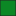
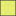

<!doctype html>
<html lang="en">
    <head>
        <meta charset="utf-8">
        <meta http-equiv="X-UA-Compatible" content="IE=edge">
        <meta name="viewport" content="initial-scale=1,user-scalable=no,maximum-scale=1,width=device-width">
        <meta name="mobile-web-app-capable" content="yes">
        <meta name="apple-mobile-web-app-capable" content="yes">
        <link rel="stylesheet" href="css/leaflet.css">
        <link rel="stylesheet" href="css/qgis2web.css"><link rel="stylesheet" href="css/fontawesome-all.min.css">
        <style>
        #map {
            width: 876px;
            height: 607px;
        }
        </style>
        <title></title>
    </head>
    <body>
        <div id="map">
        </div>
        <script src="js/qgis2web_expressions.js"></script>
        <script src="js/leaflet.js"></script>
        <script src="js/leaflet.rotatedMarker.js"></script>
        <script src="js/leaflet.pattern.js"></script>
        <script src="js/leaflet-hash.js"></script>
        <script src="js/Autolinker.min.js"></script>
        <script src="js/rbush.min.js"></script>
        <script src="js/labelgun.min.js"></script>
        <script src="js/labels.js"></script>
        <script src="data/Regions_1.js"></script>
        <script src="data/Toponyms_2.js"></script>
        <script>
        var map = L.map('map', {
            zoomControl:true, maxZoom:28, minZoom:1
        })
        var hash = new L.Hash(map);
        map.attributionControl.setPrefix('<a href="https://github.com/tomchadwin/qgis2web" target="_blank">qgis2web</a> &middot; <a href="http://leafletjs.com" title="A JS library for interactive maps">Leaflet</a>');
        var bounds_group = new L.featureGroup([]);
        function setBounds() {
            if (bounds_group.getLayers().length) {
                map.fitBounds(bounds_group.getBounds());
            }
        }
        var layer_GoogleSatellite_0 = L.tileLayer('https://mt1.google.com/vt/lyrs=s&x={x}&y={y}&z={z}', {
            opacity: 1.0
        });
        layer_GoogleSatellite_0.addTo(map);
        map.addLayer(layer_GoogleSatellite_0);
        function pop_Regions_1(feature, layer) {
            var popupContent = '<table>\
                    <tr>\
                        <td colspan="2">' + (feature.properties['id'] !== null ? Autolinker.link(String(feature.properties['id'])) : '') + '</td>\
                    </tr>\
                    <tr>\
                        <td colspan="2"><strong>Region</strong><br />' + (feature.properties['Region'] !== null ? Autolinker.link(String(feature.properties['Region'])) : '') + '</td>\
                    </tr>\
                    <tr>\
                        <td colspan="2"><strong>Sub-Region</strong><br />' + (feature.properties['Sub-Region'] !== null ? Autolinker.link(String(feature.properties['Sub-Region'])) : '') + '</td>\
                    </tr>\
                    <tr>\
                        <td colspan="2">' + (feature.properties['Locality'] !== null ? Autolinker.link(String(feature.properties['Locality'])) : '') + '</td>\
                    </tr>\
                </table>';
            layer.bindPopup(popupContent, {maxHeight: 400});
        }

        function style_Regions_1_0(feature) {
            switch(String(feature.properties['Region'])) {
                case 'יער':
                    return {
                pane: 'pane_Regions_1',
                opacity: 1,
                color: 'rgba(35,35,35,1.0)',
                dashArray: '',
                lineCap: 'butt',
                lineJoin: 'miter',
                weight: 1.0, 
                fill: true,
                fillOpacity: 1,
                fillColor: 'rgba(12,136,37,1.0)',
            }
                    break;
                case 'מדבר':
                    return {
                pane: 'pane_Regions_1',
                opacity: 1,
                color: 'rgba(35,35,35,1.0)',
                dashArray: '',
                lineCap: 'butt',
                lineJoin: 'miter',
                weight: 1.0, 
                fill: true,
                fillOpacity: 1,
                fillColor: 'rgba(229,237,113,1.0)',
            }
                    break;
                case 'שדה':
                    return {
                pane: 'pane_Regions_1',
                opacity: 1,
                color: 'rgba(168,207,32,1.0)',
                dashArray: '',
                lineCap: 'butt',
                lineJoin: 'miter',
                weight: 2.0, 
                fill: true,
                fillOpacity: 1,
                fillColor: 'rgba(168,207,32,1.0)',
            }
                    break;
            }
        }
        map.createPane('pane_Regions_1');
        map.getPane('pane_Regions_1').style.zIndex = 401;
        map.getPane('pane_Regions_1').style['mix-blend-mode'] = 'normal';
        var layer_Regions_1 = new L.geoJson(json_Regions_1, {
            attribution: '',
            pane: 'pane_Regions_1',
            onEachFeature: pop_Regions_1,
            style: style_Regions_1_0,
        });
        bounds_group.addLayer(layer_Regions_1);
        map.addLayer(layer_Regions_1);
        function pop_Toponyms_2(feature, layer) {
            var popupContent = '<table>\
                    <tr>\
                        <td colspan="2">' + (feature.properties['id'] !== null ? Autolinker.link(String(feature.properties['id'])) : '') + '</td>\
                    </tr>\
                    <tr>\
                        <td colspan="2">' + (feature.properties['label'] !== null ? Autolinker.link(String(feature.properties['label'])) : '') + '</td>\
                    </tr>\
                </table>';
            layer.bindPopup(popupContent, {maxHeight: 400});
        }

        function style_Toponyms_2_0() {
            return {
                pane: 'pane_Toponyms_2',
                radius: 4.0,
                opacity: 1,
                color: 'rgba(35,35,35,1.0)',
                dashArray: '',
                lineCap: 'butt',
                lineJoin: 'miter',
                weight: 1,
                fill: true,
                fillOpacity: 1,
                fillColor: 'rgba(125,139,143,1.0)',
            }
        }
        map.createPane('pane_Toponyms_2');
        map.getPane('pane_Toponyms_2').style.zIndex = 402;
        map.getPane('pane_Toponyms_2').style['mix-blend-mode'] = 'normal';
        var layer_Toponyms_2 = new L.geoJson(json_Toponyms_2, {
            attribution: '',
            pane: 'pane_Toponyms_2',
            onEachFeature: pop_Toponyms_2,
            pointToLayer: function (feature, latlng) {
                var context = {
                    feature: feature,
                    variables: {}
                };
                return L.circleMarker(latlng, style_Toponyms_2_0(feature));
            },
        });
        bounds_group.addLayer(layer_Toponyms_2);
        map.addLayer(layer_Toponyms_2);
        var baseMaps = {};
        L.control.layers(baseMaps,{' Toponyms': layer_Toponyms_2,'Regions<br /><table><tr><td style="text-align: center;"></td><td>יער</td></tr><tr><td style="text-align: center;"></td><td>מדבר</td></tr><tr><td style="text-align: center;"></td><td>שדה</td></tr></table>': layer_Regions_1,"Google Satellite": layer_GoogleSatellite_0,},{collapsed:false}).addTo(map);
        setBounds();
        var i = 0;
        layer_Regions_1.eachLayer(function(layer) {
            var context = {
                feature: layer.feature,
                variables: {}
            };
            layer.bindTooltip((layer.feature.properties['Sub-Region'] !== null?String('<div style="color: #000000; font-size: 10pt; font-family: \'MS Shell Dlg 2\', sans-serif;">' + layer.feature.properties['Sub-Region']) + '</div>':''), {permanent: true, offset: [-0, -16], className: 'css_Regions_1'});
            labels.push(layer);
            totalMarkers += 1;
              layer.added = true;
              addLabel(layer, i);
              i++;
        });
        var i = 0;
        layer_Toponyms_2.eachLayer(function(layer) {
            var context = {
                feature: layer.feature,
                variables: {}
            };
            layer.bindTooltip((layer.feature.properties['label'] !== null?String('<div style="color: #000000; font-size: 10pt; font-family: \'MS Shell Dlg 2\', sans-serif;">' + layer.feature.properties['label']) + '</div>':''), {permanent: true, offset: [-0, -16], className: 'css_Toponyms_2'});
            labels.push(layer);
            totalMarkers += 1;
              layer.added = true;
              addLabel(layer, i);
              i++;
        });
        resetLabels([layer_Regions_1,layer_Toponyms_2]);
        map.on("zoomend", function(){
            resetLabels([layer_Regions_1,layer_Toponyms_2]);
        });
        map.on("layeradd", function(){
            resetLabels([layer_Regions_1,layer_Toponyms_2]);
        });
        map.on("layerremove", function(){
            resetLabels([layer_Regions_1,layer_Toponyms_2]);
        });
        </script>
    </body>
</html>
